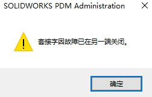
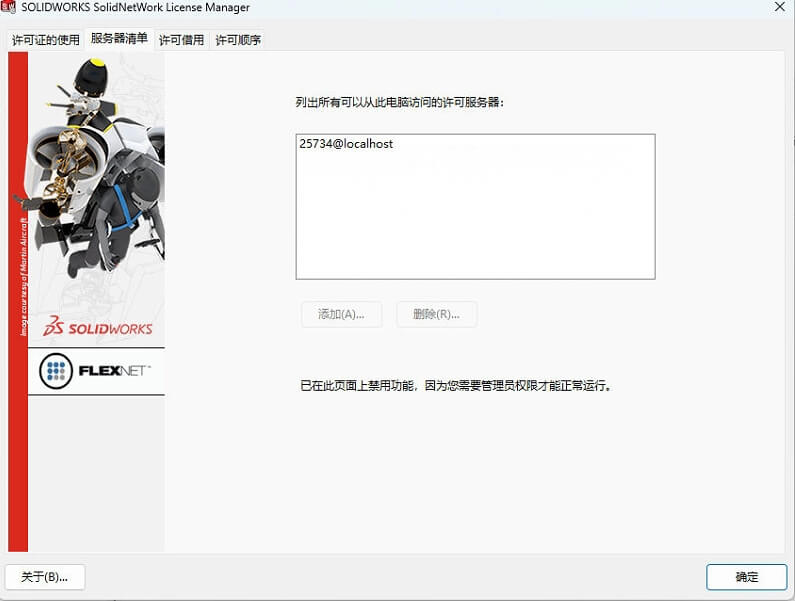
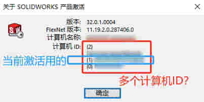

网络版许可问题
套接字因故障关闭
套接字因故障已在另一端关闭
情况1：修改注册表内容导致
管理员禁用
许可错误
如果在同时用作 SolidNetWork 许可证 (SNL) 服务器和客户端的计算机上打开 SOLIDWORKS® 时收到许可错误消息，
方法
您的计算机可能具有无效或已过期的临时 .lic 文件。例如，
“C:\ProgramData\SolidWorks”文件夹中的“SolidWorksStandaloneLic.lic”。
1.在 Windows® 文件资源管理器中，浏览到“C:\ProgramData\SolidWorks”。您可能需要激活此选项，才能在文件资源管理器中显示隐藏的文件和文件夹。
2.如果您看到任何具有“.lic”文件扩展名的文件，请将其重命名。
3.重新启动 SOLIDWORKS®。
此问题的其他症状包括：
• 您收到“独立许可证故障”或“无法获得许可证”错误。
• 使用 SOLIDWORKS 序列号的独立激活时，不提示激活许可证。
• 在您转至“帮助”>“激活许可证”时没有任何反应
多个计算机ID
安装过旧版本许可程序记录，在安装2024许可程序之后会出现的问题。
因此，你需要留意升级许可程序前，停用许可。
空计算机ID
是客户电脑禁止了FlexNet服务导致的，将服务启动，问题解决了
许可数量缺少
该情况可能发生在：有多条序列号的产品数量，当只激活1条的时候。此时当前激活的许可数量会覆盖原有数量，导致数量缺少。
处理方法：
是将现有的全部序列号进行【选择所有】激活